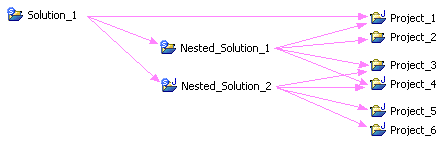
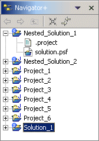
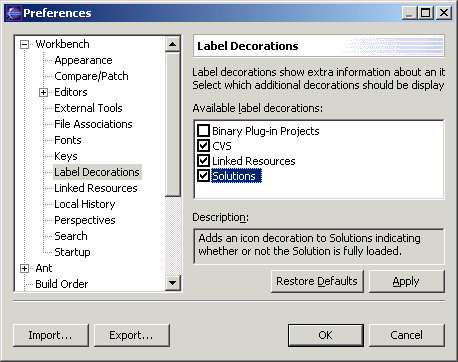

Solutions |
Available only under CVS
Our use of the word "Solutions" comes from its use in IBM's Visual Age for Java where solutions are projects that "logically" contain other projects. Rather than loading and updating projects individually, solutions and the projects and nested solutions that they contain can be loaded and updated as a single unit.
Solutions are projects just like any other and can contain java code or another other type of resources. In addition, solutions can be "nested" so that when the parent solution is loaded or updated, all projects and nested solutions are recursively loaded or updated.
Only shared projects (projects and solutions already stored in a repository) can be contained by a solution. Projects that are not shared can not be added to a solution.
New solutions can be created using the New Solution wizard, while existing projects can be converted into solutions using the Convert to Solution wizard.
Solutions
appear in the navigator along with all other types of projects, but are
denoted by a small blue
solution image overlay (label decorator) on top of the standard
 project folder image. A small gray
solution image indicates that a solution is
not
completely loaded, perhaps because a
different version of
a project or nested solution directly or indirectly contained by the
solution is loaded. A small red
solution image indicates that there is some error in the solution
specification, such as a
tag conflict.
project folder image. A small gray
solution image indicates that a solution is
not
completely loaded, perhaps because a
different version of
a project or nested solution directly or indirectly contained by the
solution is loaded. A small red
solution image indicates that there is some error in the solution
specification, such as a
tag conflict.
Each solution has a
 solution.psf file that contains the specification for the projects and
nested solutions contained by the solution along with their various
versions. Double clicking on the
solution.psf file that contains the specification for the projects and
nested solutions contained by the solution along with their various
versions. Double clicking on the
 solution.psf file opens a solution
editor to edit the specification for that solution.
solution.psf file opens a solution
editor to edit the specification for that solution.
Solutions label decorators may be turned on and off via the Workbench | Label Decorations preference page.

Acknowledgements:
Our Solutions functionality is based upon the Eclipse
Team Project Set functionality and additional Project Set functionality
provided by Dirk Baumann, Gregor Kohlwes, and Rolf Wilms at CSC
SoftwareConsult GmbH & Co. OHG. Our thanks to all for a great
foundation on which to build.